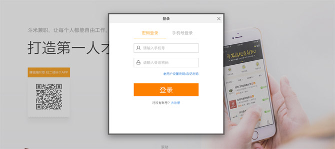
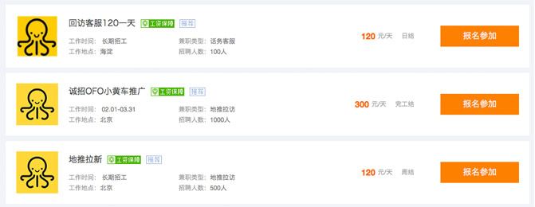
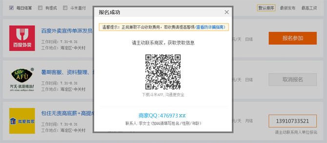
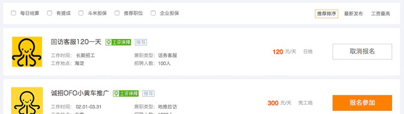

注册登录斗米兼职后，定位到所在城市，就可以挑选心仪的兼职工作了。

在斗米兼职上找到心仪的兼职工作后，点击职位详情页下方的"报名参加"，即可完成报名。

在报名兼职工作后，商家会对报名该职位的所有简历进行筛选，选定后会第一时间联系确定工作或面试时间。（如商家未及时联系您，您可以通过拨打报名成功后显示的商家电话联系商家哦~）

发工资的时间是根据您报名职位的工资结算周期而定的，请在报名前仔细查看。发工资的方式以您与商家协商的方式为准。
是可以取消的，点击"取消报名"即可。

目前每人每天最多可以报名3次哦~